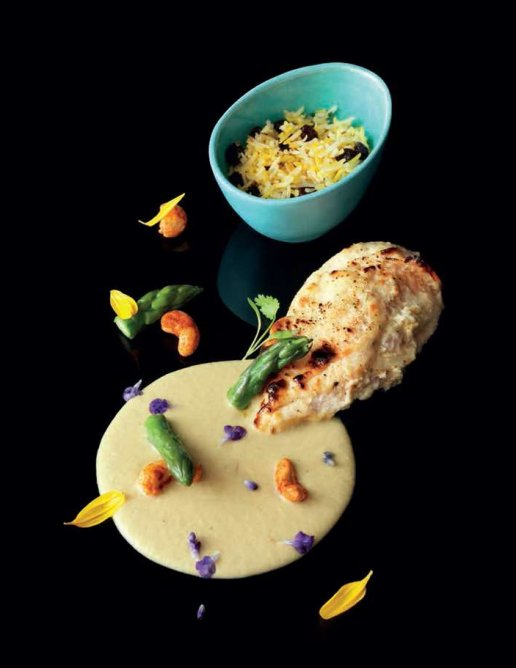

Chicken korma (Murg malai korma)

This is a classic and I love it. The sweet flavours of nuts, saffron and cream – accentuated by the magical aromas of green cardamom and mace – makes this recipe a must try. If you plan well and cook ahead of time, this is an easy one to go for, to please your family, friends and guests.
For the saffron–raisin pulao
For the korma gravy
Gently use your fingers to ease the marinade under each chicken supreme’s skin, then leave to marinate for at least 30 minutes, or overnight. Take care not to tear the skins.
To make the gravy, heat the oil in a saucepan, add the cardamom pods and sauté over a medium heat until they crackle. Add the onion and continue sautéing for 3–5 minutes until they are translucent.
Whisk together the cream, yogurt, cashew nut paste, melon seed paste and garam masala, then add to the pan with salt to taste and simmer, uncovered, for 10–12 minutes until thickened. Add up to 100ml water, if necessary, to loosen the gravy. Add the cardamom-mace powder and adjust the salt, if necessary. Keep hot until required.
Meanwhile, prepare the asparagus and cashew nuts for garnishing. Bring a saucepan of salted water to the boil, add the asparagus and blanch for 3 minutes, or until just tender. Immediately drain and refresh in cold water to stop the cooking and set the colour. Set aside.
Heat enough oil for deep-frying until it reaches 190°C. Add the cashew nuts and fry for 1–2 minutes until golden brown. Drain well on kitchen paper to absorb the excess oil, then toss with chilli powder and table salt to taste. Set aside.
Just before you are ready to cook the chicken, preheat the oven to 180°C and finish the pulao. Melt the butter with the oil in a heavy-based saucepan, add the whole spices and the bay leaf and sauté over a medium heat until the spices crackle. Add the rice and sauté for 1 minute, then add the stock, drained raisins and salt to taste. Bring to the boil, then cover and simmer over a very low heat for 7–10 minutes until the water is absorbed and the rice is perfectly cooked. Stir in the saffron and its soaking water, re-cover and keep hot.
Place the chicken supremes in a roasting tray lined with a non-stick oven mat and roast for 8–10 minutes until the juices run clear when pierced with the tip of a knife. Leave to rest for 5 minutes, covered with foil.
Meanwhile, to finish the asparagus for the garnish, melt the butter with the water in a large frying pan. Add the asparagus and reheat until hot.
Put 2 spoonfuls of gravy on each plate and add a chicken supreme, with a portion of the pulao. Garnish and serve.